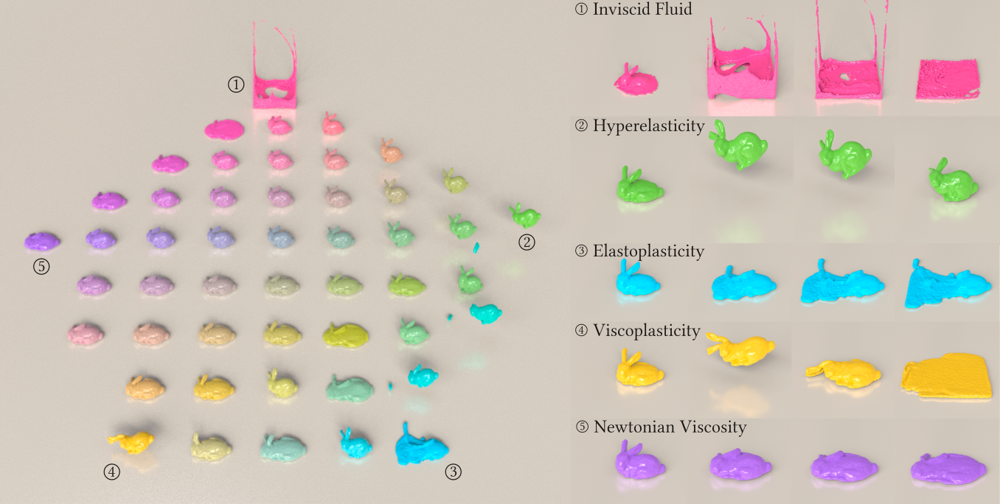
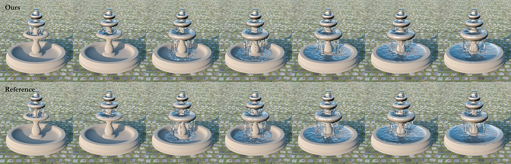
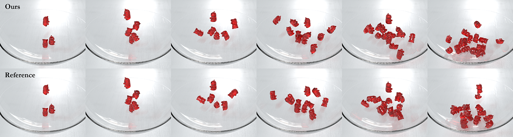
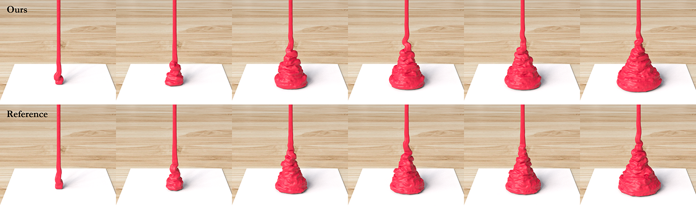
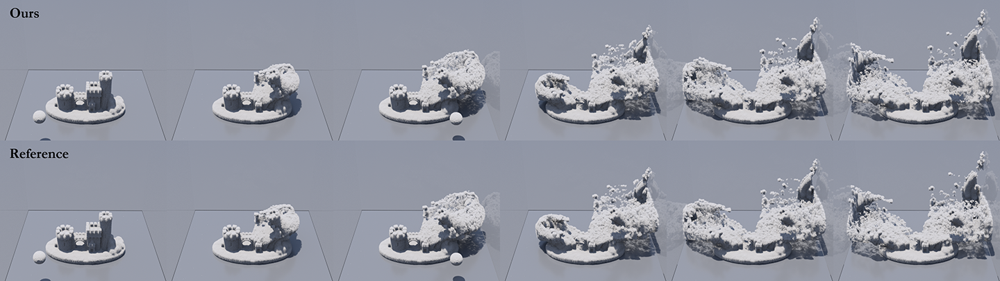
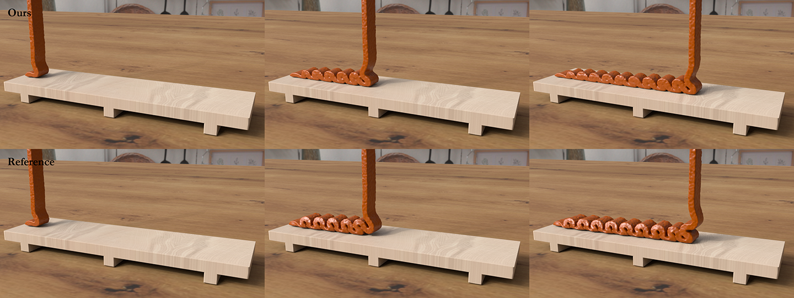
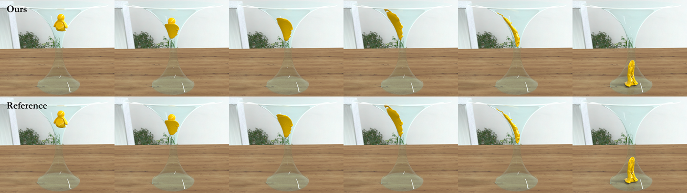
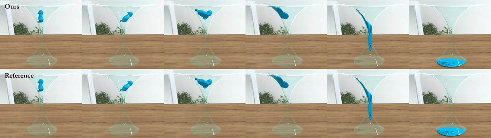
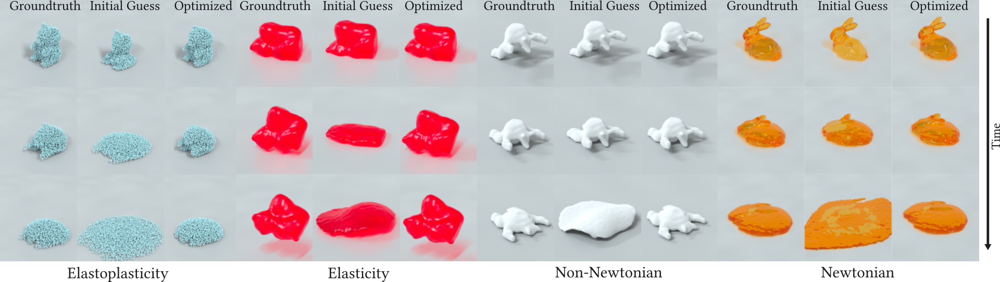
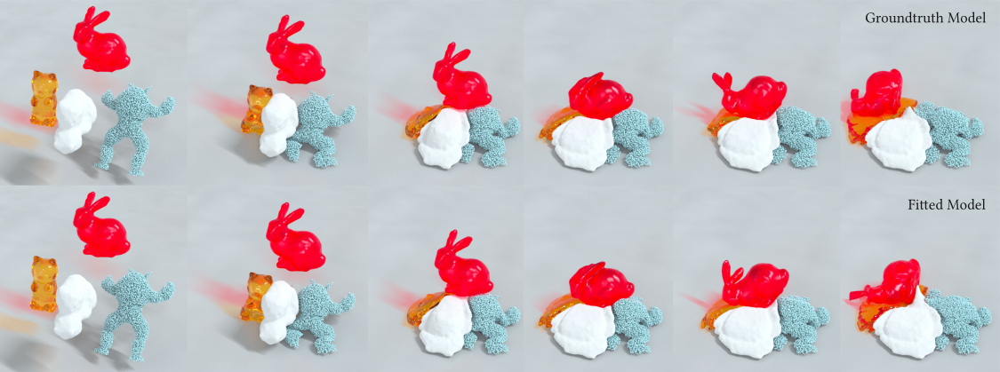

A Generalized Constitutive Model for Versatile MPM Simulation and Inverse Learning with Differentiable Physics
Proceedings of the ACM on Computer Graphics and Interactive Techniques (Symposium on Computer Animation 2023)
Haozhe Su*, Rutgers University
Xuan Li*, University of California, Los Angeles
Tao Xue, Nanjing University of Science and Technology
Chenfanfu Jiang, University of California, Los Angeles
Mridul Aanjaneya, Rutgers University
*Equal contributions.

Abstract
We present a generalized constitutive model for versatile physics simulation of inviscid fluids, Newtonian viscosity, hyperelasticity, viscoplasticity, elastoplasticity, and other physical effects that arise due to a mixture of these behaviors. The key ideas behind our formulation are the design of a generalized Kirchhoff stress tensor that can describe hyperelasticity, Newtonian viscosity and inviscid fluids, and the use of pre-projection and post-correction rules for simulating material behaviors that involve plasticity, including elastoplasticity and viscoplasticity. We show how our generalized Kirchhoff stress tensor can be coupled together into a generalized constitutive model that allows the simulation of diverse material behaviors by only changing parameter values. We present several side-by-side comparisons with physics simulations for specific constitutive models to show that our generalized model produces visually similar results. More notably, our formulation allows for inverse learning of unknown material properties directly from data using differentiable physics simulations.
We present several 3D simulations to highlight the robustness of our method, even with multiple different materials. To the best of our knowledge, our approach is the first to recover the knowledge of unknown material properties without making explicit assumptions about the data.
Video
Gallery

Several hyperelastic gummy bears collide as they are dropped into a bowl. (Top) Results using our
generalized model with 𝜅 > 0, 𝜇 > 0, 𝜂 = 0, with no viscoplasticity or elastoplasticity. (Bottom) Reference
results simulated with traditional MPM.

Several hyperelastic gummy bears collide as they are dropped into a bowl. (Top) Results using our
generalized model with 𝜅 > 0, 𝜇 > 0, 𝜂 = 0, with no viscoplasticity or elastoplasticity. (Bottom) Reference
results simulated with traditional MPM.

Classical liquid rope coiling effect exhibited by a Newtonian viscous liquid when poured on a rigid
surface. (Top) Results produced by using our generalized constitutive model. (Bottom) Reference results
simuated using traditional MPM.

Two snow balls collide with a snow castle. (Top) Our generalized model can achieve elastoplastic
behavior when the critical coefficients 𝑓𝑐, 𝑓𝑠 and the hardening factor 𝑓ℎ are appropriately selected while
keeping the viscoplasticity turned off. (Bottom) Reference results simulated using [Stomakhin et al. 2013].

Symmetric buckling patterns of Newtonian fluid using (top) our generalized model and (bottom)
traditional MPM.

A shear-thinning liquid flows immediately when it hits the hourglass, but largely holds its shape as it
falls on the ground and the applied stresses decrease. Simulations produced by (top) our generalized model
and (bottom) traditional MPM.

A shear-thickening liquid exhibits resistance to flow initially and bounces elastically, but eventually
flows down as the velocities decrease. Simulations produced by (top) our generalized constitutive model and
(bottom) traditional MPM.

With the same initial guess, our generalized model is able to mimic multiple types of materials via
inverse learning.

We use the fitted model obtained in the previous image and test its generalizability by using it to simulate
different shapes in the same scene. Simulation results with the fitted models closely reproduce the behaviors
of the ground truth models.